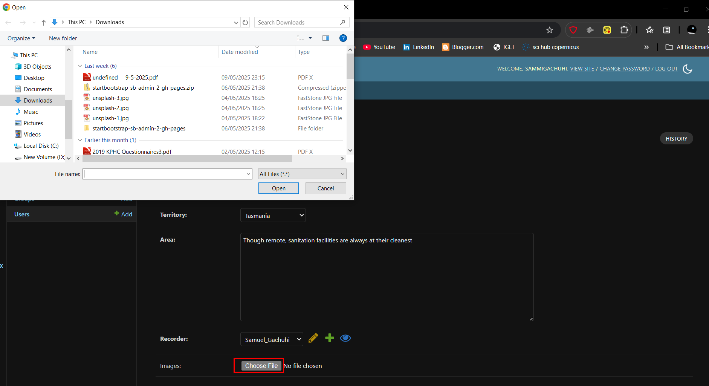
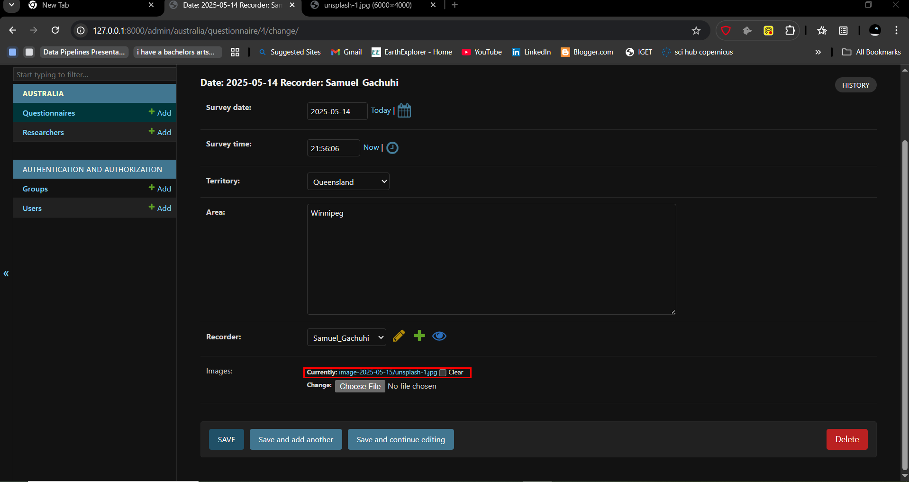

Chapter 13: Images in Django
Adding images
They say an image is worth a thousand words. We would like our question to have the option of uploading an image. However, this component will be optional, in that if a respondent doesn't like it they can just leave it blank.
Let's proceed and do so.
Add a images field in models.py
Go to your australia/models.py and add the following to the Questionnaire model, right at the bottom and just before the def __str__() function.
class Questionnaire(models.Model):
--snip--
recorder = models.ForeignKey(Researcher, on_delete=models.CASCADE,)
# images
images = models.FileField(upload_to="image-%Y-%m-%d", blank=True)
def __str__(self):
return f"Date: {self.survey_date} Recorder: {self.recorder}"
The models.FileField is responsible for enabling upload of files in your Django app. The upload_to parameter provides a way of setting up the upload directory and file name. We have beautified it in that it will also show the year-month-day as part of the path of the uploaded file. We set blank to True so that it's possible for one fill and save the questionnaire without uploading an image.
Updating settings.py for images
In your sanitations/settings.py file, at the very bottom, add the following two lines of code.
MEDIA_ROOT = BASE_DIR / "uploads"
MEDIA_URL = "media/"
The MEDIA_ROOT setting constructs the path to the upload folder while the MEDIA_URL will provide the url to the uploaded file.
Update the urls.py file
Remember urls are responsible for routing, and we want our images to be rendered somewhere. We will therefore add the route for our uploads in the sanitation/urls.py file.
from django.contrib import admin
from django.urls import path, include
from django.conf import settings
from django.conf.urls.static import static
-- snip --
] + static(settings.MEDIA_URL, document_root=settings.MEDIA_ROOT)
Perform migrations
Now let's save the migrations that we've done.
python3 manage.py makemigrations australia
Now that we've taken a snapshot of the migrations, its time to implement the changes in our database.
python3 manage.py migrate australia
You will see our changes have been added into the australia/migrations folder.
Rerun the server
As always, seeing is believing. Therefore rerun your server via python3 manage.py runserver. Go to the Questionnaire tab. You can create a new one or update an existing questionnaire. Open the questionnaire and you will see an images field. Upload any image of your choice using this button. Once done, hit SAVE.

If you recheck the same questionnaire again, you will see a link to the images. If you wish to get rid of the image, just check the Clear box and hit SAVE again.
